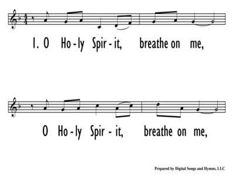

|
|
|
|
O Holy Spirit Breathe on Me ] |
【求聖靈吹我】 |
|
 |
|
|
|
|

-
O Holy Spirit, Breathe On Me - Norman
L. Warren
Warren,
Norman Leonard, 1934-
https://hymnary.org/person/Warren_NL
NORMAN WARREN (b. 1934) was Archdeacon
of Rochester until his recent retirement. He was born in London and studied
Music and Theology at Cambridge University. He has written a large amount of
published music - hymn tunes, songs, anthems and instrumental pieces, notably
organ. He is married to Yvonne, a psychotherapist. He has also written a number
of books on the Christian life, including one of the world's best selling
evangelistic booklets, JOURNEY INTO LIFE. A member of the Jubilate Team all of
his hymn tunes are represented by Hope Publishing Co. in the United States and
Canada. His fine hymn tune SAMSON is set to the Christopher Idle text "In The
Day of Need" can be found as #445 in Hope's new hymnal WORSHIP & REJOICE (2001).
| Text: | O Holy Spirit, breathe on me |
| Author: | Norman Warren |
| Tune: | [O Holy Spirit, breathe on me] |
| Composer: | Norman Warren |
John 20:21-23
Acts 2:1-4
Romans 5:5
2 Corinthians 5:17
Galatians 5:22-26
Ephesians 3:16-19
Ephesians 5:18
2 Timothy 1:7